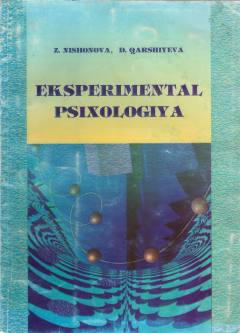

EPEksperimental psixologiya va psixologik tadqiqot metodlariga bag'ishlangan o'quv qo'llanma.
Ushbu o'quv qo'llanmada eksperimental psixologiya fanining dolzarb muammolari hamda shaxsni o'rganish metodlari yoritilgan. Unda laboratoriya va tabiiy eksperiment sharoitida psixologik faktlarni olish, tahlil qilish va statistik qayta ishlash usullari bayon etilgan.